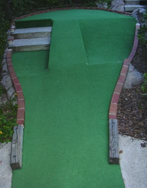

| E:
Fisherman's Landing 500 E. 3rd Ave, New Smyrna
(where 44 becomes A1A)
(386) 426-8515

| 
| Price: Closed Permanently Number of Courses: 2 Upkeep: C Originality: C Hole-in-One Difficulty: Medium/Hard Par Difficulty: Medium/Hard Music: None
This is the most crowded mini-golf we know. They have two courses, one medium and one hard. The medium course is a fairly typical course in many respects. The hard course is very challenging, with lots of bends and slopes that require just the right angle or speed. But the variety was a little disappointing. |